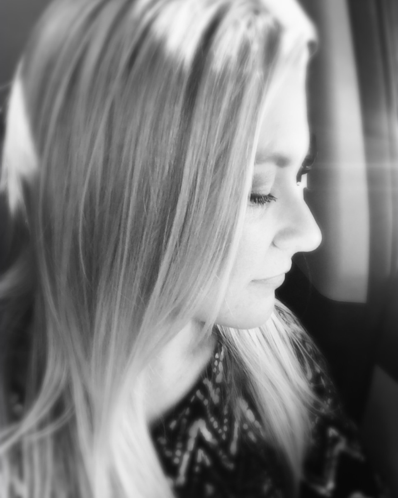

There has to be a better way.
So she built one.
Raquel Covey created Slate & Signal because it is what she needed but could not find anywhere. When she began her work in social media management, the overwhelm and information overload were staggering. Thankfully, life circumstances had shaped her into a stellar researcher, and DNA made her tenacious. The combination created a thought process and a method to push back the noise and the spoken absolutes, find clarity, and start building. Building from the individual, and from what makes them who they are. She describes the work as thinning the weeds to see the garden.
A founder she worked with knew exactly who she was. She knew her voice, her visuals, the outcome she wanted, and the value she was there to give. She knew what brought her stillness, and she wanted to hand that to other people.
People around her said it would not work the way she wanted to present herself. She would have to brighten the footage, use all the trends, only use certain fonts, do this the ONE way this is done or you will fail. This founder was almost out of the game before she was able to begin.
So Raquel went looking. She typed in every combination of words that felt like this founder, and found entire niches she had never heard of. Millions of followers. Real creators, real authority, real products. Different pacing, different music, different everything. And an audience for every one of them.

If you find the right room, you find your people.
Slate & Signal is a personal brand intelligence platform founded by Raquel Covey for founders, coaches, and creators. It works from a person's own life, their experiences, interests, and the things they keep returning to, and turns that into direction built for them alone: their archetype, the niche where it belongs, the color psychology that fits it, and what to make. The work runs on live research and AI rather than the general advice filling social media, because branding is not one size fits all. There are two products. The Signal Profile is the entry point, a shorter read still built entirely on the individual. The Signal Report is the full study, with cited research behind a niche recommendation, market opportunity, and income comparables.
Are you ready for clarity?
The Signal Profile is the entry point. It reads what is already there and gives you one direction to build on.
Get Your Signal Profile